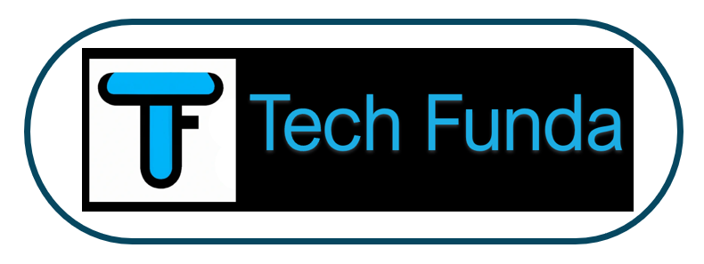

Phone:
99635 00844
Email:
subhashkonda@gmail.com
Welcome to Tech Funda
Interview readiness
10 Mock Interviews from Tier-1 company professionals
9 Mentoring seesions from Industry Experts
Current Courses
DATA STRUCTURES (6 Months)
SYSTEM DESIGN (3 Months)
Introduction
Data Structures
What is an Algorithm
What is Running time analysis
How to Compare Algorithms
What is Rate of Growth
Types of Analysis
Asymptotic notation
Big-O/Omega/Theta Notation
Live Problem solving
Recursion
What is Recursion
Why is Recursion
Format of a Recursive function
Recursion and Memory
Recursion vs Iteration
Live Problem solving
Backtracking
Introduction
What is Backtracking
Advantages of Backtracking
Live Problem solving
Searching
Introduction
What is searching
Why do we need searching
Types of searching
Linear Search
Sorted Linear Search
Binary Search
String Searching
Live Problem solving
String Manipulations
Introduction
String matching algorithm
Rabin-Krap algorithm
KMP algorithm
Boyer-Moore algorithm
Tires
Suffix Trees
Live Problem solving
Sorting
Introduction
Various Sorting techniques
Live Problem solving
Stacks
What is Stack
How Stacks are used
Live Problem solving
Queues
What is Queues
How Queues are used
Live Problem solving
Priority Queues
What is PQ
Heaps
Binary Heaps
Live Problem solving
Linked Lists
What are linked lists
Why linked lists
Comarision of linked lists vs arrays
Single linked lists
Doubly linked lists
Circular linked lists
Skip lists
Memory efficient double linked lists
Unrolled linked lists
Live Problem solving
Bit-Wise Programming
Introduction
Operators
Tips and Tricks
Live Problem solving
Algorithm Techniques
Introduction
Classification
Classification by Implementation
Classification by Design
Hashing
What is Hashing
Why Hashing
Understanding Hashing
Components of Hashing
Hash Table
Hash function
Load factor
Collision
Collision resolution techiniques
Separate chaining
Open Addression
How hashing gets O(1) complexity
Problems can't fit for hash tables
Bloom Filters
Live Problem solving
Greedy Technique
Introduction
Greedy Strategy
Elements of Greedy Algorithm
Does Greedy works always
Advantages of Greedy
Disadvantages of Greedy
Greedy Applications
Live Problem solving
Divide and Conquer Technique
Introduction
What is Divide and Conquer strategy
Does Divide and Conquer works always
Visualization of Divide and Conquer
Understanding Divide and Conquer
Master Theorem
Advantages of Divide and Conquer
Disadvantages of Divide and Conquer
Live Problem solving
Dynamic Programming
Introduction
What is DP
Properties of DP
Greedy vs Divide and Conquer vs DP
Does DP works always
DP Approaches
Live Problem solving
Symbol Tables
Introduction
Symbol Table Implementation
Live Problem solving
Graphs
Introduction
Graph Representation
Various Grapth Traverslas
Topological sort
Shortest path algorithm
Minimal Spanning tree
Live Problem solving
Trees
Introduction
What is Binary Tree
Types of Binary Tree
Properties of Binary Tree
N-ary Trees (Generic)
Stack/Quele less traversals
Expression Trees
XOR Trees
Binary Search Trees (BSTs)
AVL Trees
Live Problem solving